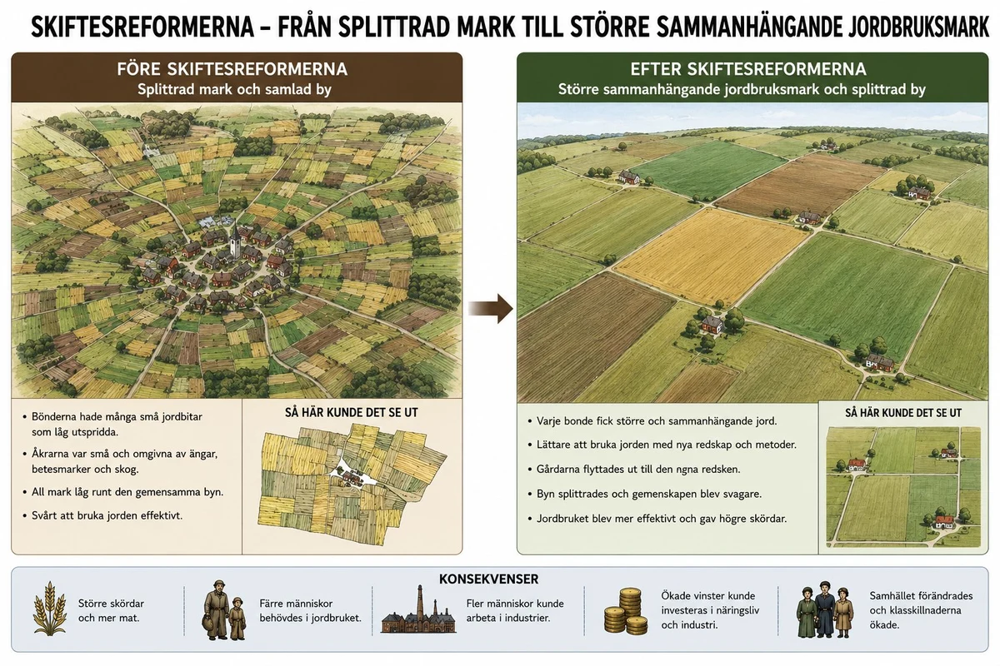
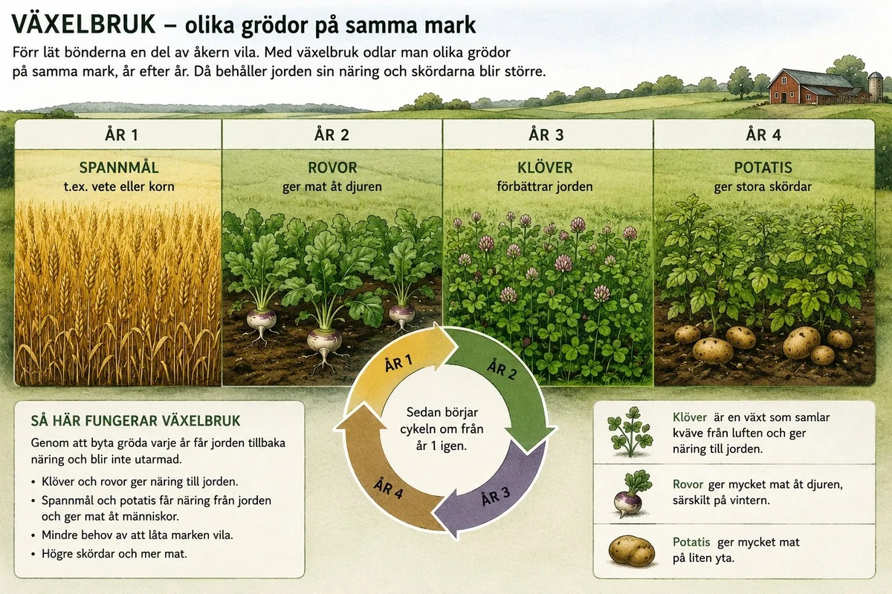
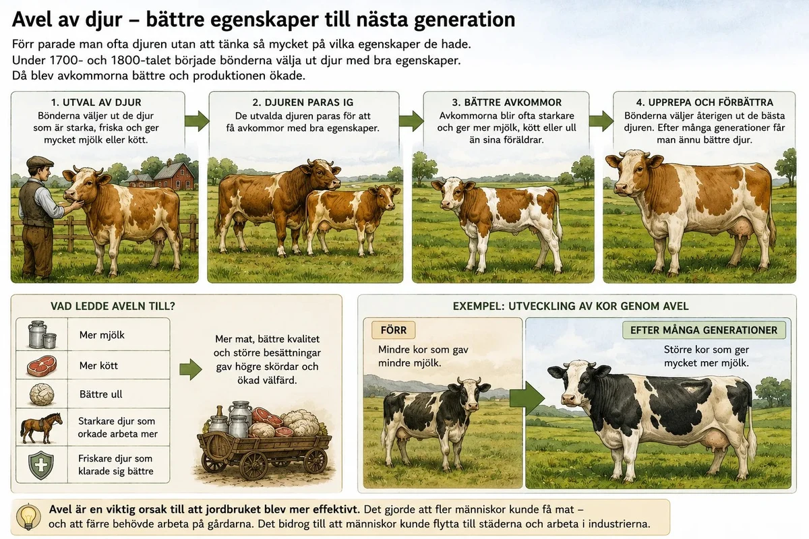
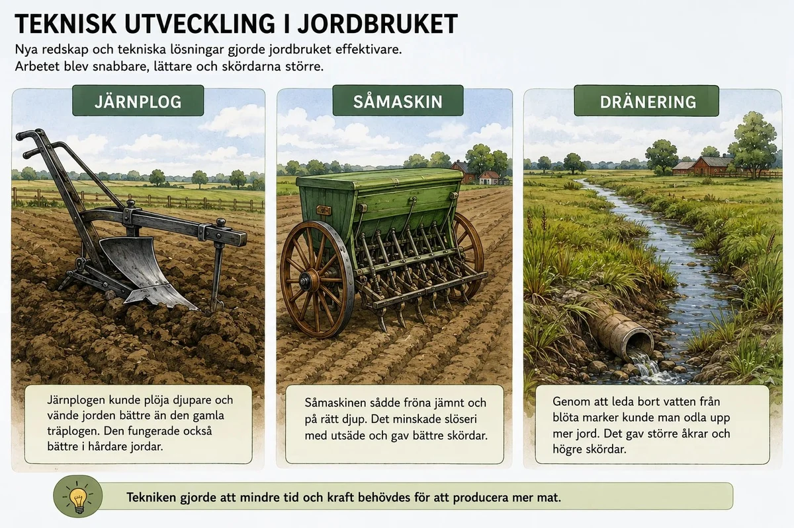
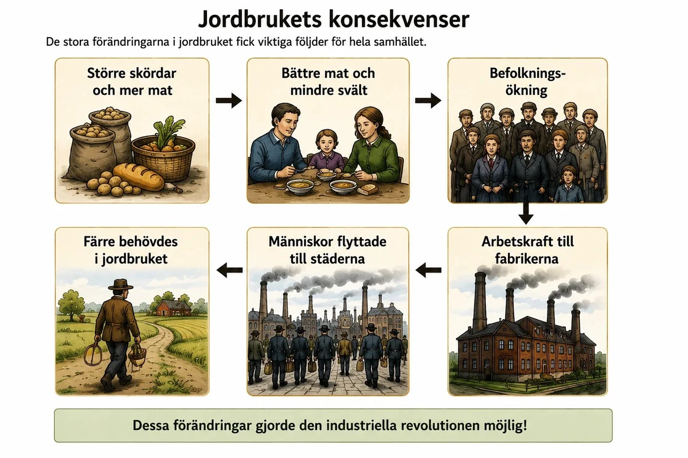

— skiftet, växelbruket, aveln och tekniken som gjorde industrin möjlig —
Före den industriella revolutionen levde de flesta människor på landsbygden och arbetade med jordbruk. Samhället var ett jordbrukssamhälle. Jordbruket var länge ganska ineffektivt. Bönderna hade ofta många små åkrar som låg utspridda runt byn, och de var tvungna att samarbeta om sådd och skörd. Skördarna blev ofta små, och flera dåliga år i rad kunde leda till svält.
Före den industriella revolutionen levde nästan alla människor i Europa av jordbruk. Samhället var ett jordbrukssamhälle där människor odlade sin mat och arbetade nära naturen. De flesta bodde på landsbygden och arbetet följde årstiderna. Skördarna avgjorde om människor skulle få tillräckligt med mat eller om det skulle bli svält.
Jordbruket var länge ganska ineffektivt. Bönderna arbetade med enkla redskap och de flesta åkrar var uppdelade i många smala tegar utspridda runt byn. Det gjorde arbetet långsamt och bönderna mycket beroende av varandra. Ibland låg delar av marken i träda — den fick vila för att återfå näring. Skördarna var ganska små och många levde nära svältgränsen.
Genom skiftesreformer samlades böndernas utspridda åkrar till större, sammanhängande fält. Då blev det lättare att plöja, så och skörda med nya redskap. Bönderna kunde också bestämma mer själva och prova nya metoder. Men reformerna förändrade landsbygden: gårdar flyttades isär och den gamla bygemenskapen försvagades.

Under 1700- och 1800-talet genomfördes skiftesreformer i Sverige och liknande reformer i Storbritannien. Målet var att samla böndernas utspridda jord till större sammanhängande åkrar. Det blev lättare att plöja, så och skörda på ett effektivt sätt och att prova nya grödor och arbetsmetoder.
Skiftesreformerna förändrade inte bara jordbruket utan också livet på landsbygden. Förr hade människor levt tätt tillsammans i byarna och hjälpts åt, men nu blev gårdarna mer utspridda och den gamla bygemenskapen försvagades. Skillnaderna ökade: storbönder och jordägare tjänade stora pengar, medan småbönder och torpare ibland förlorade sin försörjning och tvingades lämna landsbygden.
I Storbritannien genomfördes liknande förändringar genom enclosure acts, där mark hägnades in och samlades till större jordbruk. Fattiga människor förlorade rätten till gemensamma betesmarker och tvingades söka arbete i städerna. Jordbruksrevolutionen bidrog därför direkt till att industrin fick den arbetskraft som fabrikerna behövde.
Skiftesreformerna beskrivs ofta som en teknisk förbättring — man samlade splittrade tegar till större åkrar, och jordbruket blev effektivare. Det är sant, men det är bara halva historien. I själva verket var skiftet en av de mest genomgripande omfördelningarna av mark och makt i Europas historia, och för att förstå dess betydelse måste man se vad det gjorde med människorna, inte bara med åkrarna.
I det gamla bysamhället var jorden delvis gemensam. Böndernas tegar låg blandade om varandra, betesmarker och skogar brukades tillsammans, och byn fattade gemensamma beslut om sådd och skörd. Man var tvungen att samarbeta — enskild framgång var nästan omöjlig, men det var också svält. Skiftesreformerna bröt sönder detta kollektiv. I Sverige genomfördes de i tre steg: storskiftet från 1749, enskiftet i början av 1800-talet och det stora laga skiftet från 1827. Var och en flyttade jordbruket längre bort från byns gemenskap och närmare den enskilda gården. Många hus revs och flyttades ut på ägorna, byar splittrades, och en tusenårig livsform löstes upp på några årtionden.
Bakom effektiviteten låg alltså ett djupare skifte i tänkesätt: från gemensamt till privat, från tradition till individ. Det är inte en överdrift att säga att skiftesreformerna hjälpte till att lära européerna att tänka i termer av privat äganderätt och personlig vinst — samma tänkande som skulle bära upp hela den kapitalistiska industrin.
Men den nya effektiviteten hade förlorare, och just det är historiens viktigaste poäng. När marken samlades och privatiserades gynnades de som redan hade mycket. Storbönder och jordägare kunde investera, köpa upp mer mark och tjäna stora pengar. Småbönder, torpare och de obesuttna — de som ägt lite eller inget — förlorade ofta både mark och de gamla gemensamma rättigheterna. I Storbritannien var detta ännu tydligare genom enclosure acts, lagar som hägnade in den gemensamma marken och gjorde den privat. Fattiga familjer som i generationer låtit sina djur beta på allmänningarna stod plötsligt utan. De hade inget val: de tvingades till städerna för att söka arbete.
Att den nya ordningen skapade en stor grupp jordlösa syns särskilt tydligt i Sverige. Vid sidan av de självägande bönderna växte en snabbt ökande underklass fram: torpare som arrenderade en bit mark mot dagsverken, backstugusittare utan egen jord, och statare som betalades i natura. Under 1800-talet blev denna grupp av obesuttna allt större — vid mitten av seklet ägde en betydande del av landsbygdsbefolkningen ingen jord alls. Det var ur denna växande skara människor utan mark som både industrins arbetare och, senare, de hundratusentals emigranterna till Amerika till stor del kom. Skiftesreformerna löste alltså ett problem — ineffektiviteten — men skapade ett nytt: en massa människor som inte längre hade någon plats i det gamla systemet.
Och här sluts en avgörande cirkel. Den arbetskraft som fabrikerna snart skulle behöva uppstod inte ur tomma intet — den skapades delvis av skiftesreformerna och enclosure, som drev bort människor från landsbygden. Effektivare jordbruk krävde färre händer; de överflödiga händerna hamnade i fabrikerna. Jordbruksrevolutionen och industrialiseringen var alltså inte två skilda händelser, utan två sidor av samma process: samma reform som gjorde åkern bördigare gjorde också arbetaren tillgänglig. Du kommer att möta dessa människor igen i temat om arbetskraften.
Man kan därför läsa skiftesreformerna som ett tidigt exempel på ett mönster som återkommer genom hela den moderna historien: en förändring gör samhället rikare som helhet, samtidigt som den slår hårt mot dem som står svagast. Vinsten och priset bärs sällan av samma människor. Att fråga vem som vann och vem som förlorade — inte bara blev det effektivare? — är själva kärnan i historiskt tänkande, och skiftet är ett av de tydligaste fallen att öva den frågan på.
- `skiftesreformerna-fore-efter.webp` — "Före och efter skiftesreformerna — en av historiens största markförändringar"
Växelbruk betydde att man odlade olika grödor på samma mark olika år, till exempel spannmål ett år och klöver nästa. Då behövde marken inte ligga i träda lika ofta, och jorden behöll sin näring. Nya grödor blev viktiga: potatis gav mycket mat på liten yta och klarade kallt klimat, och rovor blev vinterfoder åt djuren.

Istället för att låta delar av marken vila började bönderna använda växelbruk. Marken behövde inte längre vila — och skördarna ökade kraftigt.
Nya grödor fick stor betydelse. Potatisen blev särskilt viktig — stora skördar på liten yta, klarade kalla klimat. För fattiga människor var potatisen skillnaden mellan svält och överlevnad. Klöver förbättrade jordens bördighet och fungerade som vinterfoder. Rovor gjorde att fler djur kunde överleva vintern.
Fler djur som överlevde vintern gav mer kött, mjölk och ull — och mer gödsel som förbättrade åkrarna ytterligare. Jordbruket hamnade i en positiv spiral där varje förbättring förstärkte nästa.
Om skiftesreformerna ändrade vem som ägde jorden, så ändrade växelbruket och de nya grödorna hur mycket jorden kunde ge — och den förändringen var närmast osynlig men fullständigt avgörande. För att förstå varför måste man börja med det gamla systemets största slöseri: trädan.
I det gamla jordbruket, med två- eller tresäde, lämnades varje år en betydande del av marken obrukad för att "vila" och återfå näring. I praktiken betydde det att en tredjedel — ibland hälften — av all odlingsbar jord inte producerade någon mat alls. Växelbruket avskaffade detta slöseri med ett enkelt men snillrikt grepp: i stället för att låta marken vila odlade man olika grödor efter varandra i en genomtänkt följd. Effekten blev att nästan all mark kunde brukas hela tiden — en produktionsökning på flera tiotals procent utan att en enda ny åker bröts.
Varför fungerade det? Här ligger det som gör växelbruket djupt intressant. Olika grödor påverkar jorden olika. Spannmål tär på näringen, medan klöver och andra baljväxter tvärtom tillför kväve till marken. Bönderna på 1700-talet visste inte varför — kvävets kemi förstods först på 1800-talet — men de såg att jorden efter klöver bar bättre. De hade alltså upptäckt kvävefixeringen i praktiken långt innan vetenskapen kunde förklara den. Detta är ett vackert exempel på hur mänsklig kunskap ofta går: erfarenheten kommer först, förklaringen sedan.
Det mest berömda systemet växte fram i England och kallas Norfolk-växelbruket: en fyraårig växling mellan vete, rovor, korn och klöver, utan ett enda trädesår. Det förknippas med godsägare som Charles Townshend, vars iver för rovodling gav honom öknamnet "Turnip" Townshend. Systemet fick också en följd som lätt glöms bort men betydde enormt mycket i vardagen: eftersom rovor och klöver gav vinterfoder behövde bönderna inte längre slakta större delen av sina djur inför vintern. Den gamla höstslakten, då man dödade allt man inte kunde föda över den kalla årstiden, kunde upphöra. Färskt kött och mjölk året runt förändrade både kosten och hälsan för miljoner människor.
De nya grödorna förstärkte allt. Potatisen är det stora exemplet, och dess historia sträcker sig över halva jordklotet. Den kom ursprungligen från Sydamerika och nådde Europa som en följd av den så kallade Columbianska utväxlingen — det enorma utbytet av växter, djur och sjukdomar mellan gamla och nya världen efter 1492. Potatisen gav mer näring per kvadratmeter än något spannmål, klarade kall och mager jord och blev för miljoner fattiga bokstavligen skillnaden mellan svält och överlevnad.
Men beroendet hade en farlig baksida, och den visar hur sammanflätade framsteg och sårbarhet kan vara. När en hel befolkning börjar leva av en enda gröda blir den utlämnad om grödan slår fel. Det tydligaste och mest tragiska exemplet är den irländska svälten 1845–1849, då en potatissjuka förstörde skördarna och omkring en miljon människor dog medan ytterligare miljoner emigrerade. Samma potatis som räddat Europa från svält kunde alltså också bli en fälla.
Slutligen skapade de nya grödorna en positiv spiral som är värd att lägga på minnet. Rovor och klöver gav vinterfoder, så att fler djur kunde hållas vid liv över vintern i stället för att slaktas på hösten. Fler djur gav mer kött och mjölk — och mer gödsel, som i sin tur gjorde åkrarna ännu bördigare, vilket gav ännu större skördar. Varje förbättring förstärkte nästa. Det gamla jordbruket hade suttit fast i en ond cirkel av svält; det nya kom in i en god cirkel av växande överskott. Och det överskottet var själva bränslet som gjorde allt det följande möjligt.
- `vaxelbruk-fyra-ar.webp` — "Växelbruk — marken vilar aldrig men utarmas inte"
Avel innebar att man medvetet valde ut djur med bra egenskaper. Steg för steg blev djuren bättre och gav mer mjölk, kött och ull. Samtidigt kom nya redskap: järnplogen plöjde djupare och såmaskinen sådde fröna jämnt. Allt detta gjorde att jordbruket kunde producera mer mat med färre arbetare.


Under denna period började man arbeta mer systematiskt med avel. Tidigare hade djuravel skett ganska slumpmässigt, men nu valde jordägare ut djur med särskilt bra egenskaper. Man ville få fram kor som gav mer mjölk, får med finare ull och starkare dragdjur. Aveln ökade jordbrukets produktion ytterligare.
Aveln visar hur jordbruket börjat bli mer vetenskapligt och planerat. Under upplysningen växte tron fram att vetenskap och kunskap kunde förbättra världen. Det syns tydligt i hur jordbruket förändrades — inte bara av tradition, utan av medveten planering.
Nya redskap och maskiner gjorde jordbruket effektivare. Järnplogen plöjde djupare än äldre träplogar och fungerade bättre i hård jord. Såmaskinen sådde fröna jämnt och på rätt djup, vilket minskade slöseri. Man började också dränera våta marker för att skapa mer odlingsbar jord.
Senare kom tröskverk som separerade säden från axen mycket snabbare än handarbete. Arbete som tidigare tagit många dagar gick nu på timmar. Den tekniska utvecklingen gjorde att jordbruket kunde producera mer mat med färre arbetsinsatser — och det var en förutsättning för det som kom härnäst.
Det som hände med djuren och redskapen under jordbruksrevolutionen brukar avfärdas snabbt — bättre kor, vassare plogar — men om man ser efter döljer sig här något större: jordbruket förvandlades från en tradition till en vetenskap, och det säger något viktigt om hela epoken.
Ta aveln. I århundraden hade djur parat sig mer eller mindre slumpmässigt, och bönder hade valt djur på känsla. Under 1700-talet började man i stället arbeta systematiskt: man valde medvetet ut de djur som hade önskade egenskaper — mest mjölk, finast ull, mest kött — och parade dem för att föra egenskaperna vidare. Den mest berömde var engelsmannen Robert Bakewell, som genom noggrant urval på sin gård tog fram får och nötkreatur som var långt produktivare än tidigare raser. Bakewell förde nästan bok över sina djur som en ingenjör över sina maskiner. Det som ser ut som bondförnuft var i själva verket något nytt: tanken att naturen kan förbättras planmässigt genom mänskligt förnuft.
Och det är ingen tillfällighet att detta skedde just då. Aveln var upplysningen tillämpad på ladugården. Samma tidsanda som fick filosofer att tro att förnuft och kunskap kunde förbättra samhället fick jordbrukare att tro att de kunde förbättra sina djur och sina åkrar. Här skymtar också tidens nyttotänkande — idén att det som skapar största möjliga nytta för flest människor är gott — som senare skulle få namnet utilitarism. Effektivitet blev en dygd. (Som en fotnot i idéhistorien: när Charles Darwin ett sekel senare formulerade sin teori om det naturliga urvalet, tog han just djuruppfödarnas medvetna urval som sin utgångspunkt — det konstgjorda urvalet gav honom nyckeln till det naturliga.)
Tekniken följde samma logik. Järnplogen ersatte den gamla träplogen och kunde vända den tunga jorden djupare, så att näring fördes upp och ogräs begravdes. Såmaskinen — som engelsmannen Jethro Tull tidigt gjort känd — placerade fröna jämnt och på rätt djup i raka rader i stället för att de kastades för hand och till hälften slösades bort. Senare kom tröskverket, som skilde säden från axen på timmar i stället för dagar.
Det avgörande med all denna teknik var inte bara att den gav mer mat, utan att den gav mer mat med färre händer. En människa med järnplog och såmaskin uträttade vad det tidigare krävts flera för. Och just här ligger kopplingen framåt, till resten av kapitlet. Ett jordbruk som klarar sig med färre arbetare frigör människor — de behövs inte längre på åkern. De blir tillgängliga för något annat: fabriken. På så vis pekade varje ny plog och varje förbättrat får obönhörligt mot industristaden.
Lägg också märke till en särskilt tät tråd: den förbättrade ullen. Bakewells finullade får gav råvara till just den textilindustri som skulle bli industrialiseringens spjutspets. Jordbrukets och industrins revolutioner grep alltså in i varandra som kugghjul — det ena kunde inte snurra utan det andra. Att se den kopplingen är att förstå varför jordbruksrevolutionen inte är en förhistoria till den industriella revolutionen, utan en oskiljaktig del av den.
Bakom allt detta fanns en hel rörelse av så kallade "förbättrare" — jordägare, skriftställare och lärda sällskap som spred de nya metoderna genom böcker, tidskrifter och lantbruksutställningar. De såg sig själva som framstegsmän som med förnuftet skulle dra jordbruket in i en ny tid. Samma anda av mätande, jämförande och effektivisering som drev dem skulle strax prägla fabriken: att bryta ner arbetet i moment, mäta resultat och ständigt söka det mest effektiva sättet. Jordbruket blev på så vis en övningsplats för den rationella, uträknande blick på produktionen som är själva kärnan i det moderna industrisamhället.
- `avel-battre-djur.webp` — "Avel — bättre djur generation för generation" - `ny-teknik-redskap.webp` — "Järnplog, såmaskin och dränering — tre tekniska språng"
Jordbrukets förändringar fick stora följder. Mer mat gjorde att befolkningen växte snabbt. Eftersom färre behövdes på åkrarna flyttade många till städerna för att söka arbete — det kallas urbanisering. Vinsterna från jordbruket kunde dessutom investeras i fabriker och maskiner.

Alla förändringar i jordbruket ledde till tre stora konsekvenser som hängde ihop:
Mer mat innebar att befolkningen ökade. Fler barn överlevde. Europas befolkning växte snabbt under 1700- och 1800-talen. Den ökande befolkningen behövde arbete — och fabrikerna behövde arbetskraft.
Effektivare jordbruk innebar att färre människor behövdes på åkrarna. Småbönder och torpare som inte längre hade plats på landsbygden sökte sig till städerna. Där växte fabriker, gruvor och verkstäder fram. Denna flytt kallas urbanisering.
Jordbruksvinster skapade kapital som investerades i fabriker, järnvägar och maskiner. Utan jordbruksrevolutionen hade den industriella revolutionen troligen inte fått samma kraft eller utvecklats lika snabbt.
Alla trådar i det här temat löper samman i en enda, omvälvande följd: för första gången i historien kunde Europas befolkning växa snabbt och uthålligt utan att svälta ihjäl. Under det gamla jordbruket hade befolkningen alltid stött emot ett tak — så fort den växte tog maten slut, och svält, sjukdom och död tryckte ner den igen. Jordbruksrevolutionen lyfte det taket. Europas folkmängd, som legat ganska stilla i århundraden, ökade från omkring 140 miljoner runt 1750 till över 260 miljoner ett sekel senare.
Just den befolkningsökningen var ämnet för en av tidens mest berömda och dystra förutsägelser. Den engelske prästen Thomas Malthus hävdade 1798 att befolkningen alltid växer snabbare än matproduktionen, och att mänskligheten därför är dömd att gång på gång kastas tillbaka i svält och elände. Det intressanta är att jordbruksrevolutionen, åtminstone för en tid, bevisade att han hade fel: maten ökade faktiskt snabbare än munnarna. Men Malthus fångade en verklig fruktan, och frågan han ställde — kan jorden föda hur många människor som helst? — är fortfarande levande i vår egen tids diskussioner om befolkning, klimat och resurser.
I Sverige sammanfattade skalden Esaias Tegnér den snabba folkökningen i en berömd rad: befolkningen växte, sa han, tack vare "freden, vaccinet och potäterna". Formuleringen är värd att stanna vid, för den fångar hur flera krafter samverkade. Freden — Sverige slapp de förödande krig som tidigare dödat stora skaror — och vaccinet mot smittkoppor minskade dödligheten, medan potatisen ökade tillgången på mat. Sveriges folkmängd mer än fördubblades under 1800-talet. Men landet kunde inte ge arbete åt alla dessa nya människor, och just det överskottet blev en av de främsta orsakerna till den stora utvandringen till Amerika senare under seklet.
Konsekvenserna hängde ihop i ett system med tre delar, och det är samspelet mellan dem som gör jordbruksrevolutionen till industrialiseringens förutsättning. För det första gav mer mat en större befolkning — fler människor som behövde arbete och som samtidigt utgjorde en marknad för industrins varor. För det andra innebar det effektivare jordbruket att färre behövdes på åkrarna; de överflödiga sökte sig till städerna, en flytt som kallas urbanisering. Detta var industrins arbetskraft. För det tredje skapade det lönsamma jordbruket vinster — kapital — som kunde investeras i fabriker, maskiner och järnvägar. Tre saker som industrin ovillkorligen behövde: människor, arbetare och pengar. Alla tre kom från jordbruket.
Man kan uttrycka rörelsen som ett växelspel mellan tryck och dragning. Landsbygden tryckte ut människor — det fanns inte längre plats eller försörjning åt alla. Städerna drog till sig dem med löfte om lön och arbete. Samma push- och pull-krafter förklarar inte bara flytten till fabriksstäderna, utan senare också den stora utvandringen från Europa — bland annat den svenska emigrationen till Amerika, som du möter i temat om Sverige.
Till sist är det värt att lyfta blicken och se den riktigt långa linjen, för den fortsätter rakt in i din egen vardag. På 1700-talet levde kanske 80 procent av befolkningen av jordbruk. Idag försörjer ett par procent av arbetskraften alla andra — en enda bonde kan föda hundratals människor. Samma utveckling som började med skiftet och järnplogen har alltså rullat vidare i mer än tvåhundra år, och den är själva grunden för att resten av oss kan ägna våra liv åt annat än att odla mat. När du nästa gång köper bröd utan att tänka på om skörden slog fel, lever du i den värld jordbruksrevolutionen skapade.
- `jordbrukets-konsekvenser.webp` — "Jordbrukets konsekvenser — kedjan som möjliggjorde industrialiseringen"
Laddar övningskort…
Laddar frågor ...